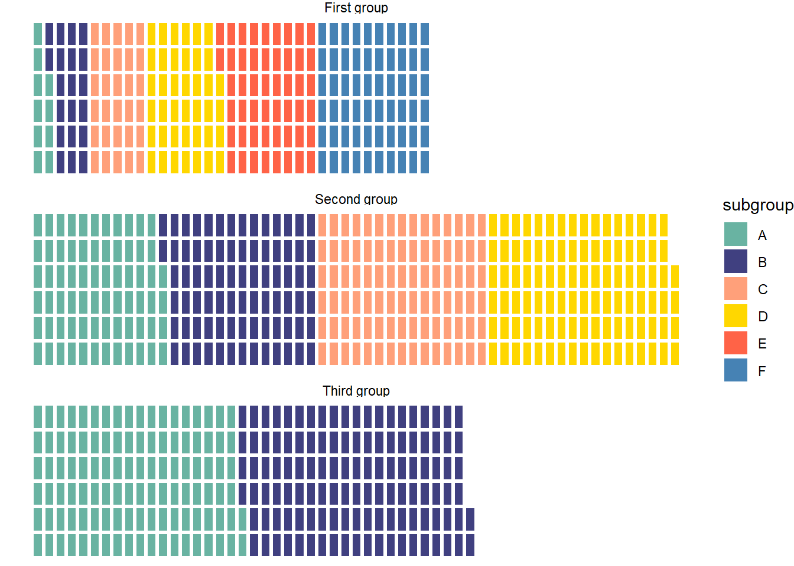
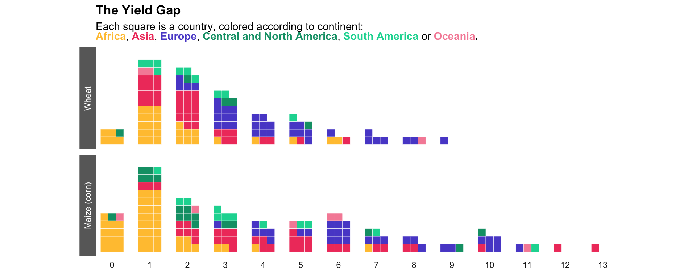

Show/Hide Code
library(waffle)
library(tidyverse)
library(ggtext)
library(rnaturalearth) # 获取世界地图数据
library(sf) # 处理空间数据Waffle chart 通过一个小方块网格直观地表示分类数据，形状像华夫饼。
每个小方块代表一个单位，每个类别有一种颜色，通常用于展示百分比或比例数据。
waffle 包提供两种不同的 API（应用程序编程接口）。第一种类似于基础 R 语法，使用 waffle() 函数。第二种 geom_waffle() 符合 tidyverse 理念，可以无缝集成到 ggplot2 调用中。
library(waffle)
library(tidyverse)
library(ggtext)
library(rnaturalearth) # 获取世界地图数据
library(sf) # 处理空间数据Base R# 构造示例数据
group <- c("group-1", "group-2", "group-3")
value <- c(13, 5, 22)
data <- data.frame(group, value)
# 绘制华夫饼图
waffle(data)rowswaffle(data, rows = 5)rows 参数设置华夫饼图的行数colorswaffle(data, rows = 5, colors = c("#fb5607", "#ff006e", "#8338ec"))colors 参数设置华夫饼图的颜色Legend通过 legend_pos 参数设置图例位置
waffle(
data,
rows = 5,
colors = c("#fb5607", "#ff006e", "#8338ec"),
legend_pos = "bottom"
)legend_pos 参数设置图例位置ggplot2geom_waffle() 可以在 ggplot2 中使用。
ggplot(data, aes(fill=group, values=value)) +
geom_waffle() +
theme_void()ggplot(data, aes(fill=group, values=value)) +
geom_waffle(color = "white") + # 添加白色边框
scale_fill_brewer(palette = "Set2") + # 使用 Set2 调色板
theme_void()Legendggplot(data, aes(fill=group, values=value)) +
geom_waffle() +
scale_fill_manual(
values = c("#999999", "#E69F00", "#56B4E9"),
labels = c("First group", "Second group", "Third group")) +
theme_void()通过对group分面，可以得到每个组的子组分布情况。
# 构造带有 subgroup 的示例数据
data <- data.frame(
group = c(
"First group",
"First group",
"First group",
"First group",
"First group",
"First group",
"Second group",
"Second group",
"Second group",
"Second group",
"Third group",
"Third group"
),
subgroup = c("A", "B", "C", "D", "E", "F", "A", "B", "C", "D", "A", "B"),
value = c(10, 20, 30, 40, 50, 60, 70, 80, 90, 100, 110, 120)
)
ggplot(data = data, aes(fill = subgroup, values = value)) +
geom_waffle(color = "white", size = 1.125, n_rows = 6) +
facet_wrap(~group, ncol = 1) + # 关键是分面 facet_wrap
theme_void()可以使用 scale_fill_manual() 来修改颜色。
ggplot(data = data, aes(fill = subgroup, values = value)) +
geom_waffle(color = "white", size = 1.125, n_rows = 6) +
facet_wrap(~group, ncol = 1) +
theme_void() +
scale_fill_manual(
values = c(
"#69b3a2",
"#404080",
"#FFA07A",
"#FFD700",
"#FF6347",
"#4682B4"
)
)
或者使用我更爱的 scale_fill_brewer(palette = "Set2") 来使用预定义的调色板。
ggplot(data = data, aes(fill = subgroup, values = value)) +
geom_waffle(color = "white", size = 1.125, n_rows = 6) +
facet_wrap(~group, ncol = 1) +
theme_void() +
scale_fill_brewer(palette = "Set2")2010-2020年全球 各大洲小麦产量 分布的华夫饼图：

大西洋飓风数量 分布的华夫饼图：
不同大洲作为动物饲料消耗的 谷物比例: